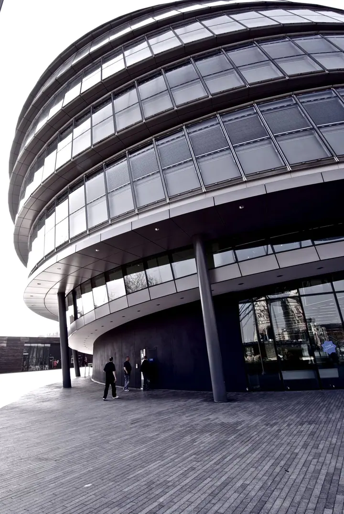
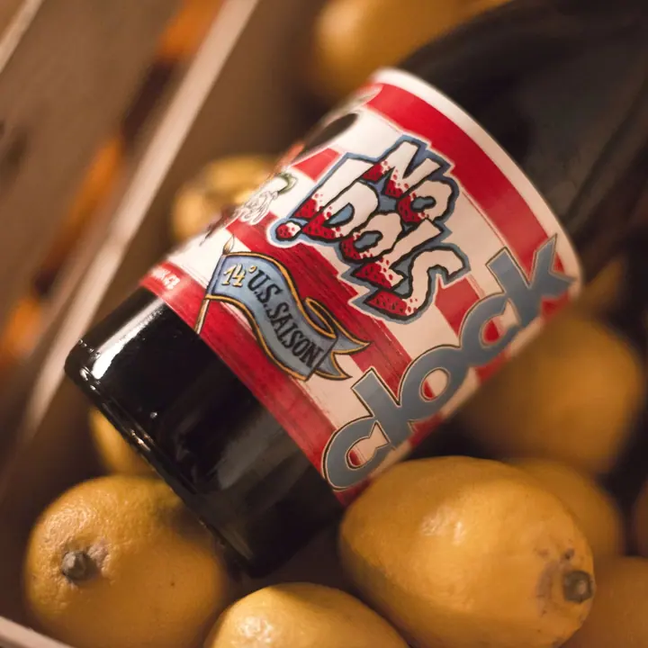
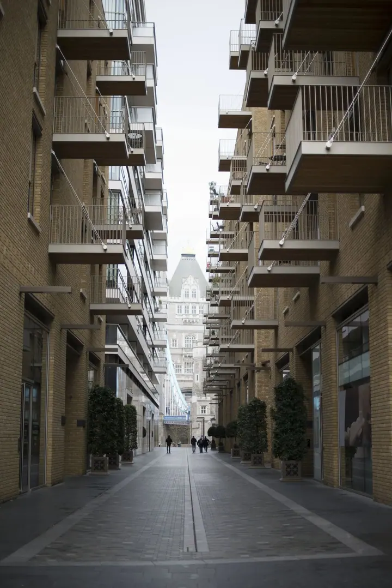
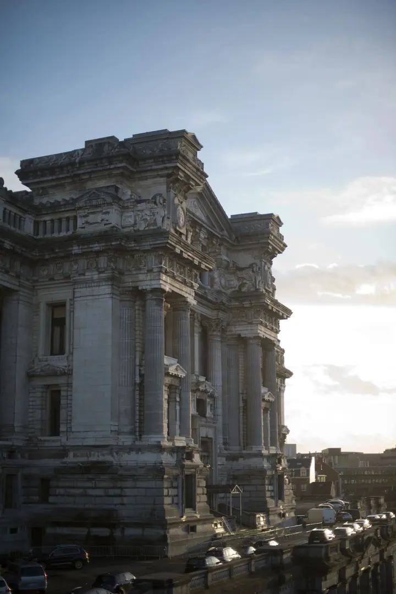
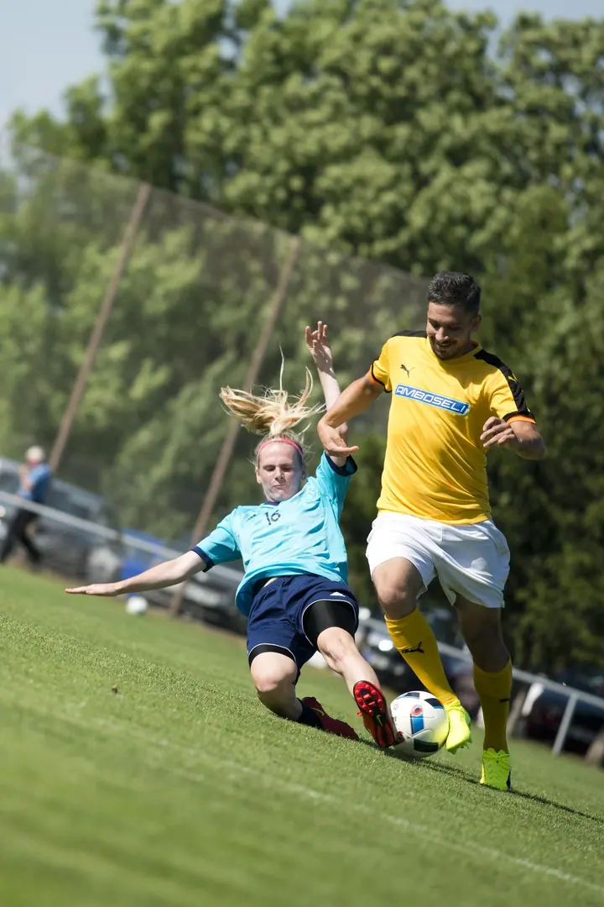
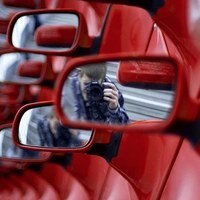

01 / 03
Produktová fotografie
Máte skvělý produkt, ale nikdo o něm neví? Nafotím ho tak, aby vynikl na webu, v katalogu i na sociálních sítích.
Zeptat se na termín→




Věci takové, jaké jsou
Zeptat se na termín →(01) Ahoj
Jmenuji se Jakub Fiedler a fotím produkty , akce i interiéry a architekturu . Zachycuji věci takové, jaké jsou, a pomáhám vám ukázat to, co děláte, světu.
(02) Co fotím
01 / 03
Máte skvělý produkt, ale nikdo o něm neví? Nafotím ho tak, aby vynikl na webu, v katalogu i na sociálních sítích.
Zeptat se na termín→02 / 03
Fotím firemní akce, veletrhy, koncerty i večírky. Zachytím atmosféru, lidi a detaily, které se pak hodí do reportáže i na sítě.
Zeptat se na termín→03 / 03
Fotím byty, domy, interiéry i architekturu. Čisté linie a přirozené světlo, aby prostor působil tak, jak opravdu vypadá.
Zeptat se na termín→(04) Postup
Od první zprávy po hotovou galerii.
Krok 1 z 4
Napíšete mi nebo zavoláte, co potřebujete nafotit a k čemu budou fotky sloužit.
Krok 2 z 4
Domluvíme místo, termín, rozsah a styl, aby bylo jasné, co od focení čekat.
Krok 3 z 4
Přijedu na místo a nafotím produkty, akci nebo prostor tak, jak opravdu vypadají.
Krok 4 z 4
Vyberu nejlepší snímky, upravím je a předám vám je připravené k použití.
Máte skvělý produkt? Ukážu vás světu.
(05) Za objektivem
Fotografie je pro mě způsob, jak ukázat věci bez příkras a přitom v tom nejlepším světle. Ať jde o produkt, jídlo na talíři, nový interiér nebo atmosféru večírku, snažím se, aby fotka mluvila sama za sebe.
Rád fotím architekturu, industriální místa, urbex, sport, ulici i krajinu. Díky tomu umím pracovat s prostorem, světlem i pohybem, a to se hodí u každé zakázky.
Pokud máte skvělý produkt nebo službu, ale nikdo o nich neví, ozvěte se mi. Společně vymyslíme, jak vás ukázat světu.

Jakub
Jakub Fiedler · Produktový, eventový a realitní fotograf
Cena záleží na rozsahu a typu zakázky. Napište mi, co potřebujete, a pošlu vám nabídku na míru.
Ano, jídlo a gastro patří mezi věci, které fotím rád. Hodí se pro jídelní lístky, weby i sociální sítě.
Fotím na Sony A7III.
Termín předání se odvíjí od rozsahu zakázky. Domluvíme ho předem, abyste s fotkami mohli počítat.
(07) Kontakt
Napište pár vět o tom, co si představujete, a termín, který se vám hodí.